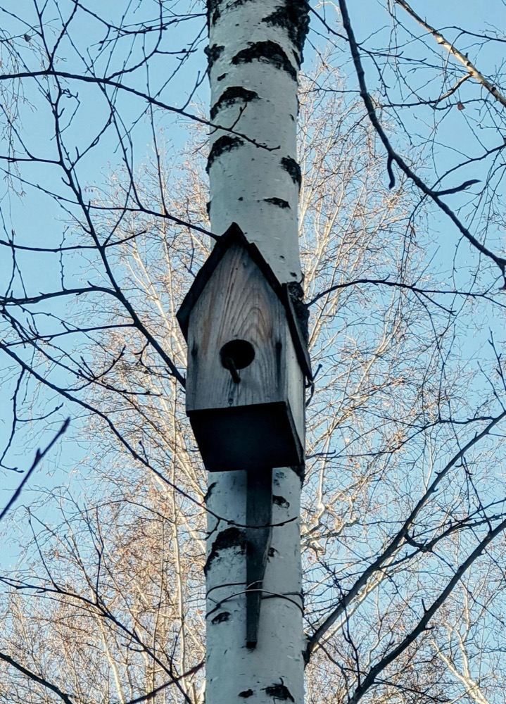

My Birdhouse Project
I made a wooden birdhouse. I chose bark becuase it looked natural.

Why I made it
I wanted timber skills and to help birds. Boxes don’t suit every bird.
I made a wooden birdhouse. I chose bark becuase it looked natural.

I wanted timber skills and to help birds. Boxes don’t suit every bird.